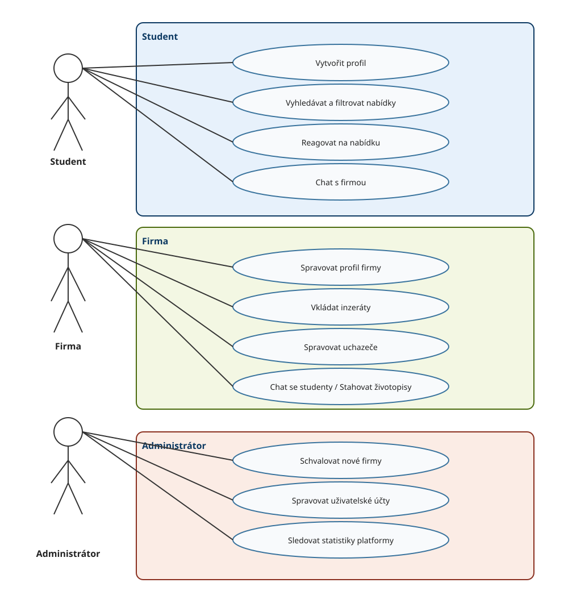

Role aplikace
1. Student
Hlavní funkce:
- Vytvoření profilu (nahrání CV, obor, dovednosti).
- Vyhledávání a filtrace brigád/praxí (podle lokality, odměny, oboru).
- Rychlá reakce na inzerát (odeslání profilu jedním kliknutím) a interní chat s firmou.
**Přínos: Hledá přivýdělek a praxi při studiu, vyžaduje rychlé a jednoduché ovládání.
2. Firma
Hlavní funkce:
- Správa firemního profilu a vkládání inzerátů (popis pozice, odměna, požadavky).
- Správa uchazečů (přehled reagujících studentů, změna stavu na přijat/zamítnut).
- Interní chat se studenty a možnost stáhnutí jejich životopisů.
- Přínos:Získává flexibilní výpomoc do projektů a budoucí juniorní talenty.
3. Administrátor
Hlavní funkce:
- Schvalování a ověřování nových firem (prevence podvodných inzerátů).
- Správa uživatelských účtů (blokování uživatelů, mazání nevhodného obsahu).
- Sledování základních statistik platformy (počet aktivních uživatelů a úspěšných propojení).
- Přínos: Zajišťuje bezpečnost, důvěryhodnost a technický chod celé platformy.
